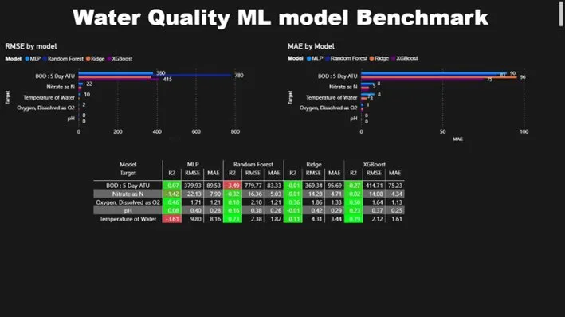
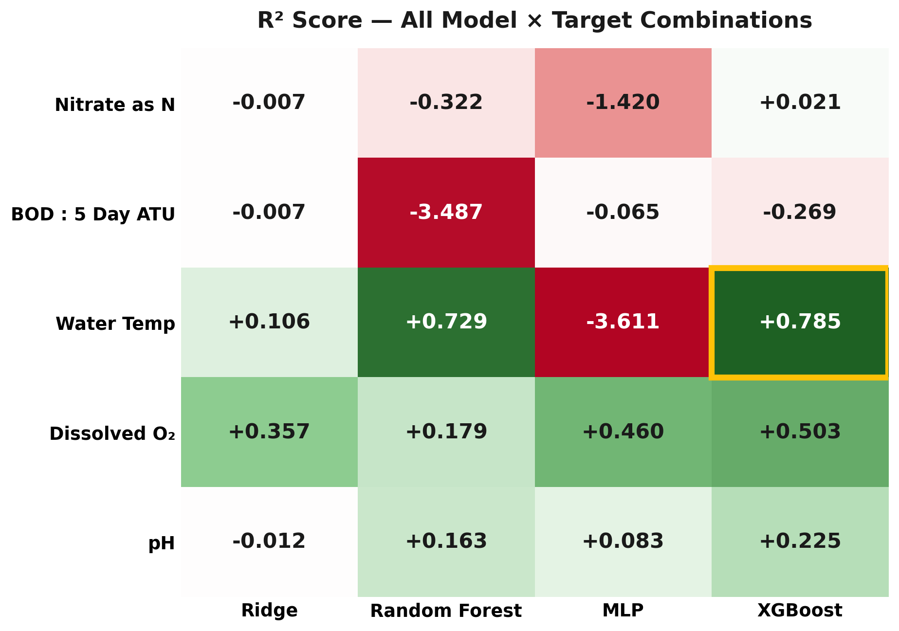
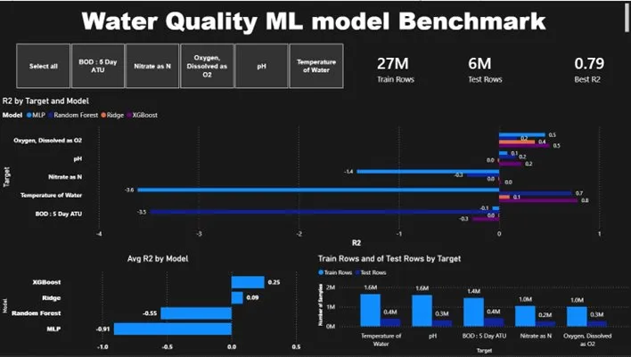

UK Environment Agency dataset, 2000–2025, five water-quality parameters. Mid-project, the upstream API was deprecated — so I rebuilt ingestion in Colab, batch-renamed 364 CSVs across 14 regions, and ran a chronological train/test split to benchmark Ridge, Random Forest, MLP, and XGBoost. The break became a system-design problem.

26 years of data,
one API outage.
Predict five water-quality parameters across 14 EA regions using 26 years of historical samples. Mid-build, the upstream Environment Agency API was deprecated (December 2025). Two choices: descope, or rebuild ingestion. I rebuilt it.
- ~8.3M samples to ingest, partitioned by 14 EA areas × 26 years.
- Five target parameters: Nitrate, BOD, Water Temp, Dissolved O₂, pH.
- API deprecation cut the original Colab pipeline mid-flight.
- Required a chronological train/test split — no peeking at the future.

Treat the break
as system design.
Rebuilt ingestion in Colab using the new beta endpoint, automated 364 CSV downloads, batch-renamed with PowerShell, and verified with a script that caught a swapped year in the Thames data. Then a chronological train/test split (train 2000–2017, test 2018–2025) — not a random split, because real forecasting can't see the future.
- Chronological split avoids data leakage common in time-series ML.
- Verification script flagged a year-number mismatch before training.
- Same preprocessing pipeline across all four models for fair comparison.
- Ridge / Random Forest / MLP / XGBoost — linear to non-linear coverage.

"When an API breaks halfway through, you have two options:
descope, or treat the break as system design.
The second answer is almost always better."
— Lesson from Study 01